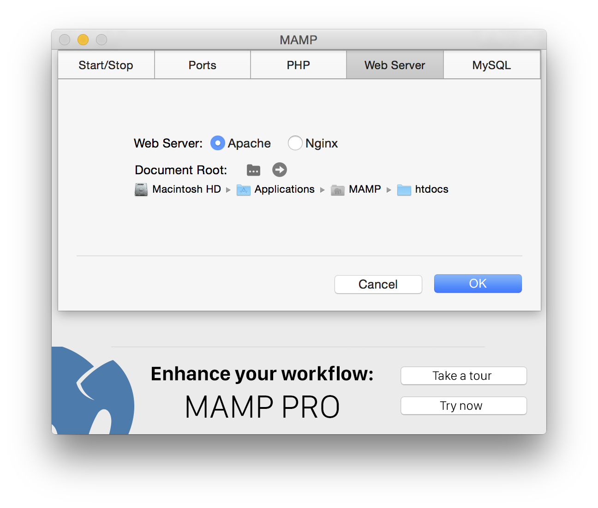

FAQ
Программы каких версий установлены?
- Apache 2.2.31
- Nginx 1.11.4
- MySQL 5.6.35
- PHP 5.4.45, 5.5.38, 5.6.30, 7.0.15 & 7.1.1
- APC 3.1.13/APCu 4.0.11 & 5.1.7
- eAccelerator 0.9.6.1
- XCache 1.2.2 & 3.2.0
- Xdebug 2.2.7, 2.4.1 & 2.5.0
- Perl 5.24.0
- mod_perl 2.0.9
- Python 2.7.13
- mod_wsgi 3.5
- mod_python 3.5.0
- Ruby (with Rails) 2.3.3 (4.2.7)
- phpMyAdmin 4.6.5.2
- phpLiteAdmin 1.9.6
- SQLiteManager 1.2.4
- Freetype 2.6.5
- OpenSSL 1.0.2j
- t1lib 5.1.2
- curl 7.52.1
- jpeg 9b
- libpng 1.6.27
- tiff 4.0.6
- Ghostscript 9.20
- ImageMagick 6.9.6-2
- Imagick 3.1.2 & 3.4.3RC1
- gd 2.2.3
- zlib 1.2.8
- ICU 56.1 (Unicode 8.0)
- libxml2 2.8.0
- libxslt 1.1.28
- gettext 0.19.6
- libidn 1.17
- iconv 1.14
- mcrypt 2.5.8
- OAuth 1.2.3 & 2.0.2
- YAZ 5.16.0 & PHP/YAZ 1.2.0
Как можно изменить мой пароль базы данных MySQL?
Откройте терминал и задайте следующее:
/Applications/MAMP/Library/bin/mysqladmin -u root -p password <НОВЫЙ ПАРОЛЬ>
вместо <НОВЫЙ ПАРОЛЬ> вводится нужный пароль.
Примите во внимание,
что после этого также необходимо изменить пароль для phpMyAdmin и других скриптов, относящихся к MAMP. Пароль для phpMyAdmin можно изменить в файле
/Applications/MAMP/bin/phpMyAdmin/config.inc.php.
Где можно изменить порты для Apache, Nginx и MySQL?
Возможность изменения портов предоставляется в настройках программы MAMP:

Куда я должен сохранять мои страницы PHP и HTML?
Настройка по умолчанию предусматривает сохранение страниц PHP и HTML в папке htdocs, расположенной в папке /Programme/MAMP. Данная папка иначе называется "Document Root". Путь Dokument Root можно изменить в любой момент в настройках программы MAMP:

Почему появляется окно ввода пароля как при запуске, так и при выходе из программы MAMP?
Вероятно, задан порт Apache менее, чем 1024. В системе Unix, такой как Mac OS X, для того, чтобы воспользоваться услугами провайдера с портами менее 1024, требуются права root.